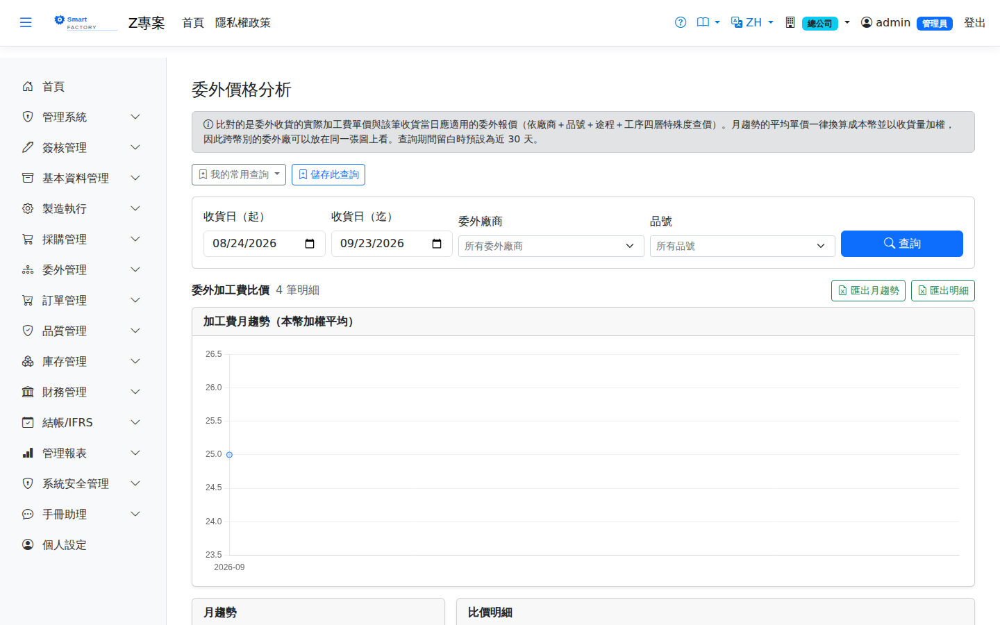
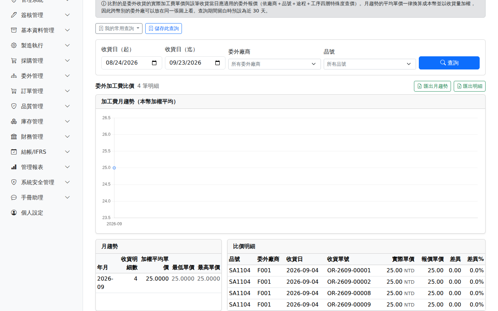

委外價格分析Outsource Price Analysis
回答兩個關於委外加工費的問題：加工費在漲嗎（月趨勢）、這一筆是照哪一張報價收的、差多少（比價明細）。資料來源是已過帳的委外收貨明細，對照的是該筆收貨當日應適用的委外報價。Answers two questions about outsourcing costs: are processing fees rising (monthly trend), and which quotation was each receipt priced against, and by how much did it differ (comparison detail). The source is posted outsource receipt lines, compared against the quotation in effect on that receipt date.

採購那一側是「進貨單價 vs 供應商報價（VendorPriceList）」，委外這一側是「加工費單價 vs 委外報價（OutsourceQuotation）」。兩張表刻意不合併：資料來源不同、查價規則也不同（委外走廠商＋品號＋途程＋工序的四層查價，採購是單層有效期），合成一張只會得到一支兩邊都不好用的報表。On the purchasing side it is "receipt unit price vs supplier price list (VendorPriceList)"; here it is "processing fee vs outsource quotation (OutsourceQuotation)". The two are deliberately kept apart: the sources differ and so do the lookup rules (outsourcing uses a four-level lookup on supplier + product + routing + operation, purchasing a single validity period), so merging them would produce one report that serves neither well.
查詢Search
計算口徑How it is calculated
趨勢圖與月表的平均單價都是本幣（單價 × 該筆的進貨匯率），所以報價幣別不同的委外廠可以放在同一張圖上看。直接平均交易幣別的單價，等於把 USD 30 和 TWD 30 加起來除以二——那個數字沒有任何意義，而它看起來完全正常。Average prices in the chart and the monthly table are in local currency (unit price × the exchange rate on that receipt), so subcontractors quoting in different currencies can be read on one chart. Averaging transaction-currency prices directly would add USD 30 to TWD 30 and halve it — a meaningless number that looks perfectly normal.
平均是以收貨量加權的：不加權的話，一筆 1 個的試作單會和一筆 10000 個的量產單等重，趨勢會被零星小單帶著跑。The average is weighted by receipt quantity: without weighting, a one-piece trial run would count as much as a 10,000-piece production run, and the trend would follow the small odd orders.
差異欄顯示「—」而不是 0，有兩種完全不同的成因，畫面上方的黃色徽章會告訴你有幾筆：The difference column shows "—" rather than 0, for two quite different reasons. The yellow badge above the table tells you how many lines are affected:
- 查無報價——這個委外廠沒有報過這個品號（也沒有廠商層級的通用報價）。這是報價維護的缺口，該去補報價主檔。No quotation found — this subcontractor has never quoted this product, and there is no supplier-level catch-all quotation either. This is a gap in quotation maintenance; the quotation master needs updating.
- 幣別不同——報價是 USD、收貨是 TWD 之類。這是換算問題，不是價差。Currency mismatch — for example the quotation is in USD and the receipt in TWD. That is a conversion issue, not a price variance.
每一筆收貨都用該筆收貨日當天有效的報價去比。期間內調過價的品號，照舊價收的那幾筆才不會被整批算成差異。查價順序與建立委外採購單時完全相同（廠商＋品號＋途程＋工序四層，由最精確往下退），所以報表看到的「應該是多少」與當初系統帶入的是同一個答案。Every receipt is compared against the quotation in effect on its own receipt date. For a product whose price changed mid-period, the receipts taken at the old price are therefore not all counted as variances. The lookup order is identical to the one used when the outsource PO was created (supplier + product + routing + operation, falling back from the most specific), so the "what it should have been" in this report is the same answer the system used at the time.
欄位說明Field reference
查詢條件Query criteria
| 條件Condition | 說明Guide |
|---|---|
| 收貨日（起 / 迄）Receipt date (from / to) | 依委外收貨單的收貨日期篩選。留白預設近 30 天Filters by the receipt date of the outsource receipt. Blank defaults to the last 30 days |
| 委外廠商Subcontractor | 只看單一委外廠的價格走勢Restricts the trend to a single subcontractor |
| 品號Product | 只看單一料件。看某個零件的加工費走勢時，這一欄通常要選Restricts to a single item. Usually needed when looking at the fee trend of one particular part |
月趨勢欄位Monthly trend fields
| 欄位Field | 說明Guide |
|---|---|
| 年月Month | 依收貨日歸月Grouped by receipt date |
| 收貨明細數Receipt Lines | 該月的委外收貨明細筆數（行，不是單）Number of outsource receipt lines that month (lines, not documents) |
| 加權平均單價Weighted Avg Price | 本幣，以收貨量加權。這是趨勢線畫的值Local currency, weighted by receipt quantity. This is the value plotted on the trend line |
| 最低 / 最高單價Min / Max Price | 本幣，用來看該月的離散程度。平均沒動但高低差拉大，通常代表有一批特殊價Local currency, showing the spread within the month. A flat average with a widening spread usually means a batch was priced differently |

比價明細欄位Comparison detail fields
| 欄位Field | 說明Guide |
|---|---|
| 品號 / 委外廠商Product / Subcontractor | 該筆收貨的料件與承接廠商；滑過廠商代號可看廠商名稱The item and the subcontractor on that receipt; hover the code to see the name |
| 收貨日 / 收貨單號Receipt Date / Receipt No. | 可回頭到委外收貨單查原始明細Lets you trace back to the outsource receipt for the original detail |
| 實際單價Actual Price | 收貨明細上的加工費單價（交易幣別）。這就是一路快照到加工費暫估與應付的那個值The processing fee on the receipt line, in transaction currency. This is the value that is snapshotted onward into the accrual and accounts payable |
| 報價單價Quoted Price | 該筆收貨當日應適用的報價；滑過可看報價單號。查無時顯示「查無報價」The quotation that applied on that receipt date; hover to see the quotation number. Shows "No quotation" when none applies |
| 差異 / 差異%Diff / Diff% | 實際 − 報價，正值（紅）＝收得比報價貴。無法比價時顯示「—」，理由見上方說明框Actual − quoted; a positive value (red) means it was received at more than the quoted price. Shows "—" when not comparable, for the reasons in the box above |
存成常用查詢Saving the query
查詢列上方有「我的常用查詢」與「儲存此查詢」，可把這一組條件存起來下次一鍵重跑。用法與注意事項見常用查詢saved queries。Above the search bar are "My saved queries" and "Save this query", which store the current criteria for one-click reuse. See saved queries for how they work and what to watch for.
相關畫面Related screens
委外報價主檔Outsource quotation、委外收貨Outsource receipt、採購價格分析Purchase price analysis